함께하는사람들
이름을 올린 것으로
연대는 시작됩니다
마포자원순환네트워크는 하나의 조직이 아니라, 뜻에 동의해 연서명한
단체·기업·개인의 느슨한 연대조직입니다.
19곳연서명 단체·기업
7명연서명 개인 (이름은 공개하지 않습니다)
연서명단체·기업
함께 이름을 올린 곳
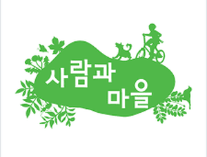
(사)사람과마을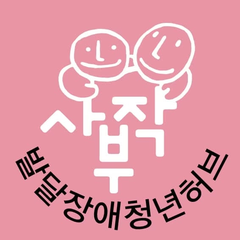
발달장애청년허브 사부작 사회적협동조합- 마포녹색당
- 해빗투게더협동조합
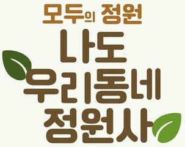
민트협동조합 봄봄마을정원사모임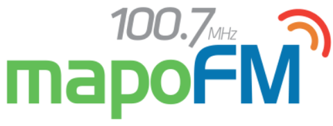
마포FM- 동네책방 개똥이네 책놀이터
- 개똥이네 문화놀이터
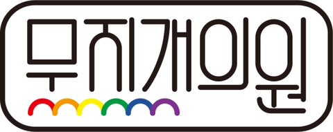
무지개의원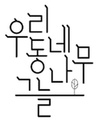
우리동네나무그늘협동조합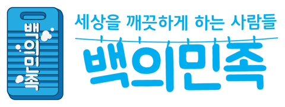
백의민족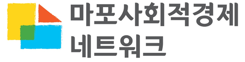
(사)마포사회적경제네트워크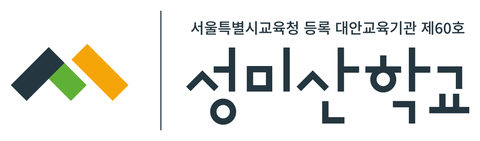
성미산학교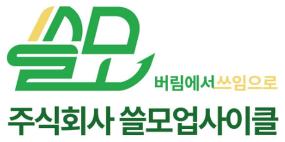
쓸모업사이클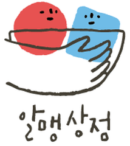
알맹상점- 울림두레생협
- 지구샵
- 에코라미
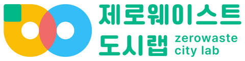
제로웨이스트도시랩
함께하는네트워크
협력 단체와 지원
서울환경연합
포럼·토론회 공동 주최, 환경디딤돌상 수여
GAIA 세계소각대안연맹
회원단체 (2025.7.17)
#BFFP
핵심 멤버 (2025.9.4), 슈퍼마켓 감사 협력
마포구
제로웨이스트 공동주택 모델 만들기 사업 발주
다정한 재단
‘다정한 기금’으로 슈퍼마켓 감사 지원